SAGANO BLOG
- >
- SAGANO BLOG
- >
- すべて(時系列)
2024年05月22日
5月14日(火)、韓国のハンイル高校から約130名の訪問があり、2年1組～6組の生徒が交流しました。参加クラスの国際交流委員がその様子をまとめてくれました。
『まず初めに、嵯峨野高校のESS部がスライドで学校紹介をし、剣道部、バトントワリング部も発表を行いました。ハンイル高校からも学校紹介とテコンドーの発表がありました。』
『本場のテコンドーを初めて生で見ました。板割りは迫力があり、素晴らしかったです。』
 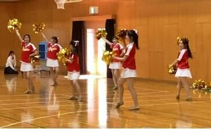
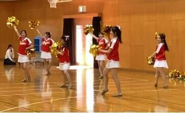
『発表の後は、ハンイル高校の生徒と嵯峨野生でグループを組み、英語を使って自己紹介をしたり、環境問題や自分の将来の夢などについて英語で話し合ったりしました。』
『将来の夢についての話を韓国の学生から聞いたときに、専門的な研究をしたり、医者になりたいという人もいて、良い刺激を受けました。』
『ハンイル高校の学校生活について聞いた際、平日は午前1時くらいまで学校で勉強し、休日は10時間以上勉強するという、日本との勉強に対する意識の違いにびっくりした。』
『京都のことを紹介した時に「それ知ってるよ！」と言ってくれた時は、日本に興味を持ってくれてるんだと感じ嬉しくなりました。』
『ハンイル高校はみんな寮生活しているとききました。』
『こちらから見ると、びっくりするようなことでも、相手から見ると普通だったり、その逆もあるので、相手の国の文化を知っていくことが大切だと思いました。』
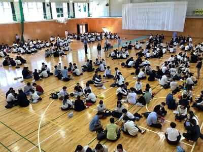
『お互い英語が母国語ではないこともあり、言葉だけでは伝わらないことも多くありましたが、写真を見せたりジェスチャーを使ったりして何とか言いたいことが伝わった時はとても嬉しかったです。』
『英語を母国語としない国の高校生同士が英語で話せたことが貴重な体験だったと思います。伝えようとする姿勢が1番大切だと学ぶことが出来ました。』
『英語を学ぶモチベーションにつながりました。』
2024年05月14日
＜春の図書館活動レポート＞
新学期の図書館の様子をお知らせします。
●Library Concert
昼休みに軽音楽部、吹奏楽部によるコンサートを２日間開催しました。スペシャルゲストでALTの先生の演奏もありました。
●茶道部お茶点て体験会
図書館上階のロフトでおこないました。
茶道部員に教えてもらいながら、自分でお茶を点（た）てます。毎回満席で、新入生から教職員まで36名が参加しました。


●図書館オリエンテーション
新入生を対象におこないました。司書による利用案内の後、新書を使ったワークショップ「おためし読書」を体験しました。

●図書館展示
「新学期スタート！春におすすめの本特集」
「高校生にすすめる本セレクション2024」(セレクションの詳細は、京都府立洛西高等学校図書館のページで紹介されています。)
次の季節展示も準備中です。お楽しみに。
2024年05月09日
5月4日、ESS部員15名（2年生8名、1年生7名）が滋賀県の近江兄弟社高校で開催された令和6年度GW（準備型）ディベート交流会に参加しました。
準備型英語ディベートでは事前に決められた論題について綿密な準備を行ってからディベートに臨みます。今年度の論題は「日本政府は原子力発電所を全て廃止すべきである。是か非か。」です。午前は専門家による講演を聞き、午後から、2年生は練習試合に臨み、1年生はディベートの基礎を学ぶ講習会に参加しました。他校の生徒と交流しながら、楽しく学び多き1日となりました。
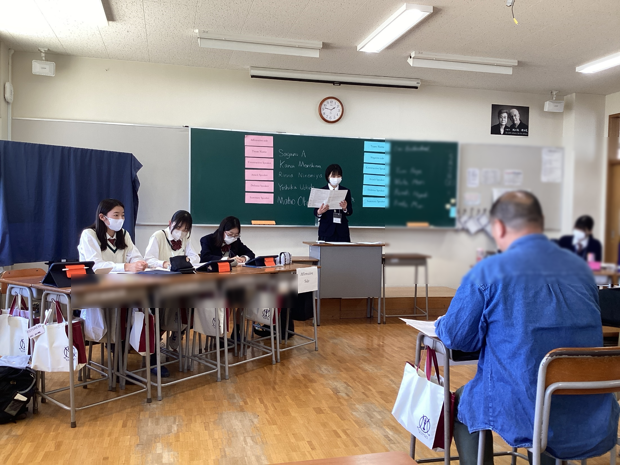 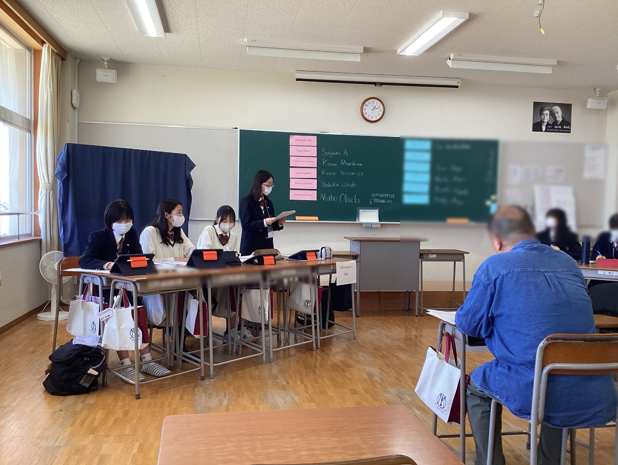
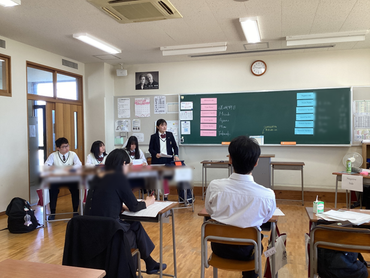 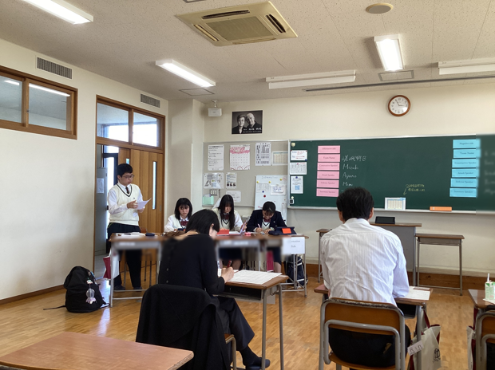
２年生は全国大会に出場することを目指しています！嵯峨野高校ESS部、今年度も１年生から３年生まで一丸となって英語ディベートに取り組んで参ります！
2024年05月02日
昨年度２月に開催された「アカデミックラボ課題研究発表会」にて、探究活動の成果を発表した３年生１組～６組の生徒たちは、来る６月10日、今度はSGF（Sagano Global Forum）でその内容を英語で発表します。発表当日に向けて英語の原稿作成と発表準備がスタートしました。
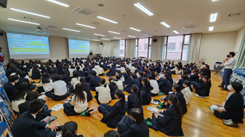
６月10日の発表会では、本校の１・２年生に加えて、京都の大学で研究する留学生や海外の高校からのお客様などを招待し発表を行う予定です。「高校１年生でも分かる」「日本語や日本文化を知らない方にも伝わる」「誰が聞いても分かりやすい」発表を目指しています。
４月15日にはコモンホールにてガイダンスを行いました。「どうすればわかりやすい発表になるか」「ただ英訳しただけの文章を読み上げるのではなく、自分の言葉で相手に伝えるにはどうしたらいいか」を考えながら、他のグループの発表原稿に目を通し、お互いに改善点を指摘しました。

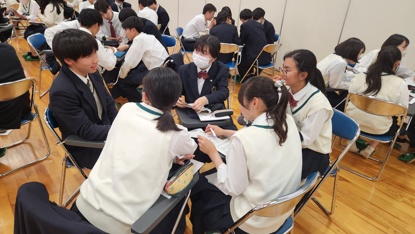
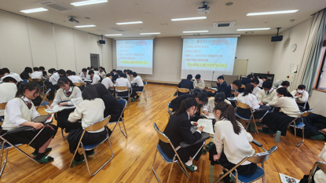
４月23日には指摘された点についてどのように改善すべきかをグループで相談しながら原稿を直しました。生徒からは「正しい英語にしたつもりだったのに、改めて読んだら分かりづらいことに気づいた」「どうしたら伝わる英語になるか、協力して考えることができた」といった声が聞かれました。
発表当日までの１か月半、生きた英語での発表に向け、試行錯誤が続きます。
2024年05月02日
4月24日(水)韓国のコクソン高校の生徒と本校の国際交流委員26名がオンラインミーティングで交流しました。今年度、コクソン高校との交流は4年目を迎えました。今年度は４回のオンライン交流を予定しています。参加生徒たちが初回の様子をまとめてくれました。
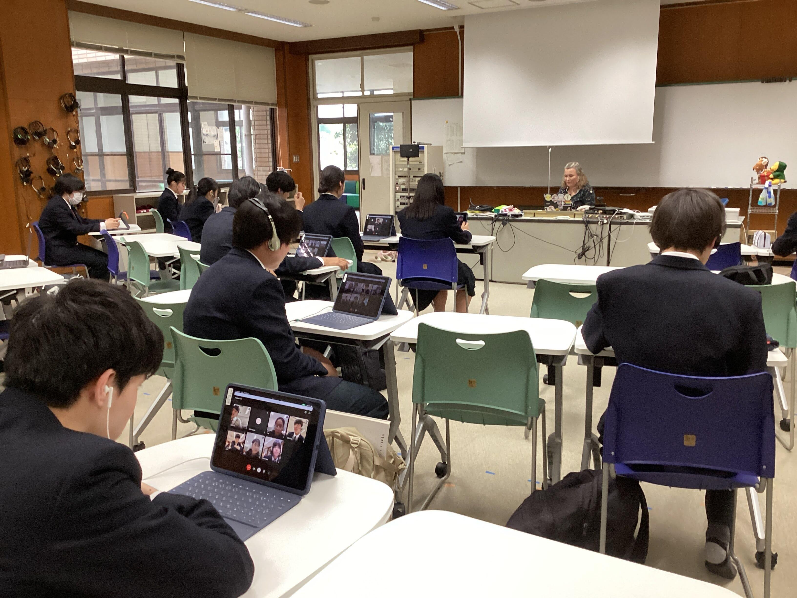 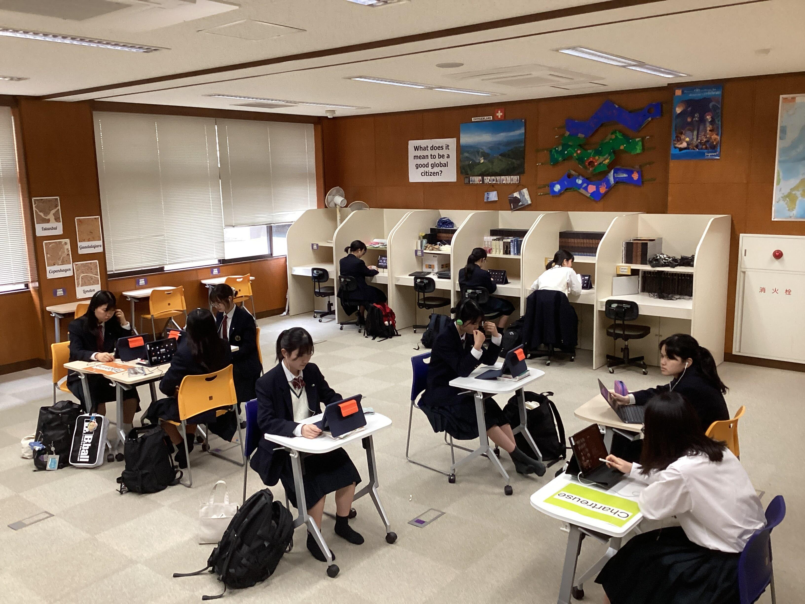
『自己紹介をしたり好きな食べ物や音楽、アニメなどを英語を使って話し合いました。最初はお互い緊張していた感じがあったけれど、話をしていくうちにだんだん緊張も解け、短時間でも、仲が深まっていくように感じました。』
『質問したい事があっても英語での質問の仕方がわからず、聞けなかったこともあったので、英語表現の引き出しを増やしていきたいです。』
『コクソン高校の方が明るく話してくれたおかげでとても楽しく会話をすることができました。発音に自信がなくても黙らず、恥ずかしがらずに笑顔で話すこと・チャレンジをすることが大切だと思いました。』

『互いの国の文化が双方の国ですごく人気があるということを改めて知りました。すずめの戸締まりやジブリアニメ、邦楽やハイキューなどの日本文化が韓国でも人気があるということに少し誇りを持てました。』
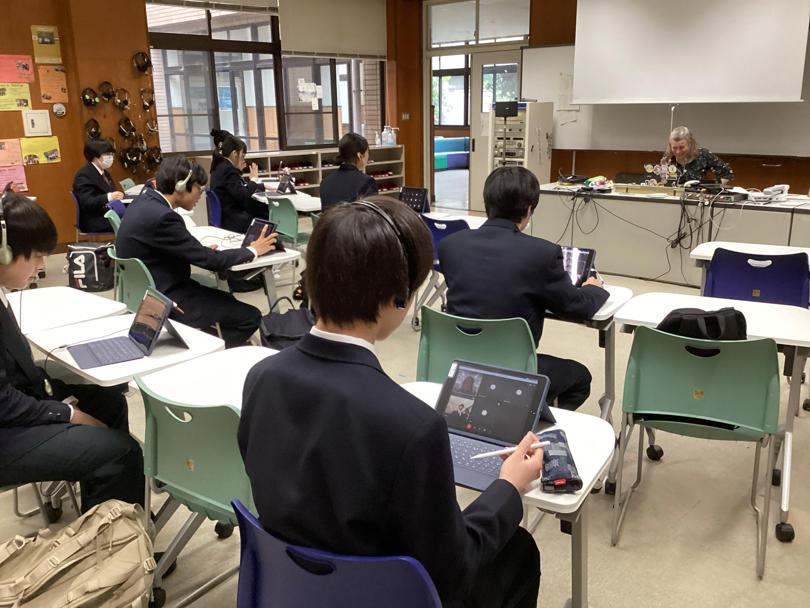 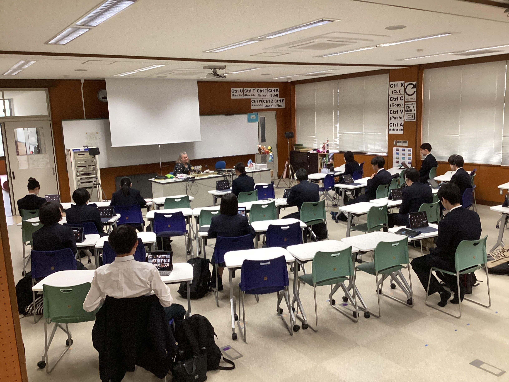
『交流を通して、自分が知らなかったキンパなどの韓国の料理に出会うことができました。また、今度それらの料理について調べ、実際に作ってみようと思っています。』
英語でまとめてくれた生徒もいました。
『 What was interesting to me was that the Korean students could speak a little Japanese. I was fascinated by their knowledge and tried to speak the Korean I knew. Through this exchange, I learned that the most important thing is to listen to what they say with interest.』
2024年04月30日
入学式を終えて早１ヶ月。１年生も少しずつ学校生活に慣れてきました。
入学後２週間はステップアッププログラムとして、分掌オリエンテーションや教科ガイダンス、校内ツアーを実施しました。

また、ステップアッププログラム３日目には佛教大学副学長の原清治先生から、「新入生に向けたメッセージ」とのタイトルで御講演くださいました。
偶然にも講演前に原先生に話しかけた２人の生徒達。２人のやりとりを再現しながら、「探究活動を行ったり、これから先を生きていく中で、相手へのリスペクトを忘れないでほしい」というメッセージを受け取りました。

そして、ステップアッププログラムのラストは学年レクリエーション！
レクリエーション１つ目のペーパータワーコンテストでは、A4用紙20枚とはさみのみでどこまで高いタワーを立てられるか、各チームの工夫が光りました。これぞまさに、探究活動！
レクリエーション２つ目の大縄跳び。体力勝負かと思いきや、ここでも各クラス20人ずつのチーム分けや跳ぶメンバーの並び順など、工夫をするのが嵯峨野生。
盛り上がった結果は、以下の通りになりました。
ペーパータワーコンテスト １位 ２組５班 ２位 ７組１班 ３位 ６組３班
大縄跳び １位 ７組(82回) ２位 ６組(54回) ３位 ８組(46回)
嵯峨野高校での旅路は、まだまだ始まったばかり。少しずつ歩み始めたみんなの１歩を教員一同、あたたかく見守っています。
2024年04月30日
１年生の総合的な探究の時間「ロジカルサイエンス」では、探究学習の基礎的なスキルを身につけることを目標にしています。
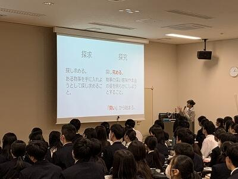
初回ガイダンス
まずは課題設定のために、興味・関心を深堀りし、文献を探します。
クラスメイトと活発に対話しながら思考しています。
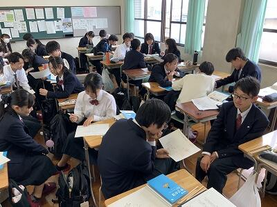
ペアワーク
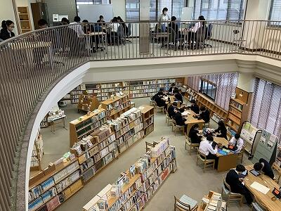
図書館でのグループワーク
１年生たちがどんな探究の「問い」を設定するのか、楽しみです。
2024年04月30日
気温が上がり、暑くなってきました。
そんな中、嵯峨野高校では、朝から熱いバトルが繰り広げられています。
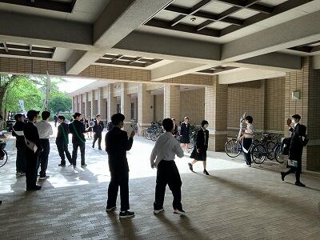
今年は１・２年生から生徒会の会長候補５名、副会長候補３名が名乗りを上げ、朝から大きな声で演説を行っています。
朝から大盛り上がりのピロティの様子でした。


2024年04月17日
４月１０日（水）～１２日（金）に、生徒会主催の「部活動相談会」を行いました。
たくさんの部活動がブースを設ける中、１年生は興味のあるブースを訪れて活動内容の説明を受けたり、疑問や不安について相談したりしていました。
先輩たちの温かさと、新たな仲間と散策する楽しさに満ちた、盛況の３日間となりました。
１年生たちは、１６日（火）の部活動登録後に、嵯峨野高校での部活動をスタートしました。まだ入部を検討している人も、気軽に部活動の様子を見に行ってください。先輩たちは、温かく皆さんを迎え入れてくれますよ。
2024年04月15日
春の「子ども読書の日」関連行事として、
4/11（木）昼休みに、図書館にて狂言部の公演をおこないました。
演目は「鬼瓦」です。
図書館入口では、狂言部作成のポスターと演目紹介がお出迎え。

最初はみなさん静かに鑑賞していましたが、
後半になるにつれ、少しずつ笑い声が聞こえてきました。
約90名の来場があり、楽しんでいただけたようです。
来場者のみなさん、狂言部のみなさん、ありがとうございました！
2024年04月11日

本日のロングホームルームでは、昨日の班長会議の内容を班員で共有した後、野外活動で調理するメニューや必要な用具・食材などを話し合いました。皆が積極的に意見を出し合い、楽しい雰囲気で準備を進めている様子が伝わってきました。明日までにメニューと必要なレンタル用品の見積書を提出することになっています。班員全員で協力して決めていって欲しいと思います。
2024年04月10日
Last school year, 8 students from Sagano High School traveled to Florida in January. Sagano High School and Jupiter High School have had an exchange program since 2015. From 2021 to 2023, it was impossible to travel to Florida, but we maintained our relationship online. Finally, this January, we could return to Florida for our 2-week exchange program on environmental and cultural studies. After returning to Japan, the participants began to formulate their ideas for a presentation on what they experienced, what they learned, and what ideas they wished they could see used here in Japan and in Kyoto. Here is a description of the full Florida exchange program for 2024!
2024年1月4日から17日までの2週間本校生徒が米国フロリダ州にあるジュピター高校を訪問する短期研修を実施しました。ジュピター高校環境学コースの皆さんとは嵯峨野高校の連携校として2015年から交流事業を実施しています。2021年から2023年の期間はコロナ禍により対面による交流はできませんでしたが、オンラインで関係を維持してきました。コロナが5類扱いとなり、ある程度海外への往来ができるようになり、対面による交流を再開することができました。
この2週間の研修で、生徒たちは同コースの生徒の家にホームステイし、ジュピター高校の授業の受講やフィールドワーク等の経験を通して、英語でのコミュニケーション能力の向上はもちろんのこと、異文化と環境学についての理解を深め、批判的・論理的思考力、判断力そして共感力を養うことができました。日本に帰国後、参加者は自分たちが体験したことや学んだことを振り返り、環境問題に関する自らの行動変容を京大環境学堂の皆さんに発表しました。

【写真】参加した高校2年生8名とマイアミ総領事館広報文化担当官（上段右端）
ジュピター高校環境学コース理科教員（上段左端）及び嵯峨野高校引率教員（下段）
以下、研修内容について詳しく報告します。
Pre-Trip Preparations - 出発前の結団式
Before leaving, the students met with the principal, who encouraged them to learn as much as possible and to investigate many research questions.
出発前の結団式では、研修で様々なことに挑戦する決意を代表生徒が表明し、校長先生からは、各自が設定した問いについての自分なりの答えを見つけるべく多くを学んでくるように励ましの言葉がありました。

Arrival and Initial Days - 1月4日～7日
January 4th-7th: On January 4th, the students were warmly received by their homestay families at the airport. The following days were spent enjoying free days with their homestay families, acclimating to the environment. We also met up together at the Jupiter Lighthouse, a symbol of the town of Jupiter, to learn about the history of the town.
約16時間のフライトの後フロリダ州ウエストパームビーチ空港に到着した生徒たちは、ホストファミリーに温かく迎えられました。最初の週末を一緒に過ごしながら、時差ぼけを克服して体調を整え、現地の気候や環境に慣れました。希望者には、ジュピターの町の象徴であるジュピター灯台で町の歴史について学ぶ機会もありました。
Educational Activities and Experiences 研修内容
January 8th: The group visited the Morikami Museum and Japanese Gardens, where they presented on Japanese nature and culture to the staff and docents, followed by a tour of the gardens, appreciating the American interest in Japanese culture.
1月8日：南フロリダにある森上博物館と日本庭園を訪問しました。職員とそこで働くボランティアガイドの方々に日本の自然と文化について発表をした後、現地の植物の生態系を考慮しながら造られた日本庭園を庭師の方（アメリカの方）に案内していただきました。ここではアメリカの人々の日本文化への関心の高さを知りました。私たちの訪問について、地元のメディアの取材を受けました。
https://www.northpalmbeachlife.com/blogs/morikami-hosts-japanese-students
January 9th: They visited Jupiter High School, got their student IDs, met the teachers. They enjoyed a lecture from Ms. Jennifer Smith, an Environmental Scientist, and two other scientists from the South Florida Water Management District, learning about wildlife protection and business-community cooperation. And they had lunch with the lead teachers of the Jupiter Environmental Research and Field Studies Academy (JERFSA)and the principal of Jupiter High School. In the afternoon, they attended a lab class in a wetland ecosystem with JERFSA students and teachers.
1月9日：ジュピター高校登校初日。生徒証明書を受け取って校内に入り、先ずは図書館兼情報センターへと案内されました。そこで、南フロリダ水管理地区の環境専門家、ジェニファー・スミス氏からの講義を受け、野生生物保護に関しての官民の協力について学びました。ジュピター高校の校長先生と環境学コース（JERFSA）長をしている先生との合同主催の昼食会に招待していただきました。午後は環境コースの生徒と湿地の生態系と水質調査に関する実習授業に参加しました。


January 10th: They again went to Jupiter High School and had a tour of the expansive school campus. In the afternoon, they did presentations on Japanese nature and culture for the 11th and 12th-grade students of JERFSA.
1月10日：ジュピター高校登校２日目。午前中は広大な校舎を見学しました。午後は、JERFSAの11年生と12年生（日本の高校1年と2年に対応）向けに、日本の自然環境と文化についてプレゼンテーションを行いました。

January 11th: They again went to Jupiter High School and attended classes with their homestay siblings.
1月11日：ジュピター高校登校3日目。ホストバディと一緒に様々な教科の授業に出席しました。

January 12th: The group traveled to Everglades National Park, a UNESCO World Heritage and Biosphere Reserve Site, to study native ecosystems and human impacts on them.
1月12日：ジュピター高校環境学コースの生徒と一緒に、ユネスコ世界自然遺産に指定されているエバーグレーズ国立公園および生物圏保護区のフィールドワークに参加しました。そこでの生態系にや在来種へ人間が与えている影響について学びました。


January 13th-15th: The weekend and the American holiday on Monday (Dr. Martin Luther King Jr. Day) were spent with the homestay families. The final event was an amazing farewell party with all the teachers and families. They had a great time!
1月13日～15日：この週末と月曜日（マーティン・ルーサー・キング・ジュニア・デーという祝日）は、ホストファミリーと一緒に過ごしました。希望者には、環境学の専門家によって地元の生態系についての観察ツアーが開催されました。最後は、この研修に参加したホストファミリーの方々が、フェアウェルパーティーを企画してくださいました。参加生徒たちはここでの経験を振り返りながら、ホストファミリーたちと素敵な時間を過ごしました。

Cultural Exchange and Daily Life - 文化交流と日常生活
Throughout their stay, students lived with American families, gaining insights into the U.S. education system and daily life, enriching the cultural exchange experience.
滞在中、生徒たちはジュピター高校の生徒の家族と日常生活を共にし、様々な異文化体験を積むことができました。ジュピター高校に通うことで、米国の教育制度や教育内容についても理解を深めることができました。
Conclusion of the Trip - 帰国
On the morning of January 16th, the students departed for Kyoto, reflecting on their enriching and educational experience in Florida. Heartfelt thanks were extended to Jupiter High School's teachers, lecturers, and homestay families.
Post-Trip Activities and Achievements - 事後研修
Upon their return, the students prepared for a face-to-face presentation at Kyoto University, sharing the outcomes of their trip and proposing future initiatives for Japan and Kyoto. This event, held at the Laboratory of Regional Planning in the Graduate School of Global Environmental Studies (LRP-GES), was a success, with valuable feedback from professors and graduate students.
帰国後、生徒たちはこの研修を振り返り、自分たちの行動はどのように変容したかについてまとめ、京都大学大学院地球環境学堂地域資源計画論研究室の教授や大学院生にプレゼンテーションをしました。参加してくださった皆さんから多面的なフィードバックをいただき、学びをさらに進めることができました。

The Sagano High School students' global presentation is featured on the LRP-GES blog
この日の様子は京都大学大学院環境学堂地域資源計画論研究室のブログでも紹介されています。//lrp.ges.kyoto-u.ac.jp/archives/3739
Thanks to everyone involved with the Sagano High School Florida Program, 2024 was a successful year!
嵯峨野高校フロリダ短期研修を実施するにあたり、多方面から様々な御支援、御協力をいただきました。お陰様で貴重な学びと成長の機会を実現することができました。今回参加した生徒たちは、グローバルリーダーの一人として、周囲に良い影響を与え続けてくれると信じています。本当にありがとうございました。
2024年04月10日

{kind=link}
{kind=link}
{kind=link}
{kind=link}
{kind=link}
{kind=link}
{kind=link}
{kind=link}
{kind=link}
{kind=link}
{kind=link}
{kind=link}
{kind=link}
{kind=link}
{kind=link}
{kind=link}
{kind=link}
{kind=link}
{kind=link}
{kind=link}
{kind=link}
{kind=link}
{kind=link}
{kind=link}
{kind=link}
{kind=link}
{kind=link}
{kind=link}
{kind=link}
{kind=link}
{kind=link}
{kind=link}
{kind=link}
{kind=link}
{kind=link}
{kind=link}
{kind=link}
{kind=link}
{kind=link}
{kind=link}
{kind=link}
4月19日(金)に実施する野外活動に向けて、昨日までに各クラス５つの班を編成し、班長を選出しました。写真は本日昼休みに行われた班長会議の様子です。担当の先生から内容に関する詳細な説明があり、班長はその内容を明日のLHR等で班員に伝達する役割を担っています。全員が真剣に説明を聴き、必要なメモをとっていました。今後メニューや必要な用具の選定などを班ごとに協議し準備を進めていきます。
2024年04月09日
始業式ではお伝えしきれなかったので、
{kind=link}
{kind=link}
始業式で以下伝達表彰がありました！
|
第３回Cyber Sakura決勝ラウンド【全国１位】 コンピュータ部 |
| 第７回高等学校軽音楽コンテスト近畿北陸大会【宇治市長賞】軽音楽部 |
| 第65回日本植物生理学会 高校生生物研究発表会【顧問教員審査員賞】生物ラボ |
| 第18回科学地理オリンピック日本選手権兼第20回国際地理オリンピック選抜大会【銅賞】 |
{kind=link}
{kind=link}
{kind=link}
{kind=link}
おめでとうございます！生徒の華々しい活躍を満開の桜も祝福しています。
{kind=link}
{kind=link}
2024年04月09日
2024年4月8日、今日はそれぞれのはじまりの日でした。

【始業式】


はじめて嵯峨野高校に来られた先生方...生徒のみなさんの心に、どんな好奇心の波紋を広げてくださるのか、とても楽しみです。
生徒部長の原田先生からは...新たな規定についてご説明と「実りある学校生活について」改めて考えるきっかけとなるお話をいただきました。
そして吉村校長先生...

生徒のみなさんの目を見ながら、じっくり語りかけるように以下2点についてお話しされました。
「できたこと」もしっかり評価して、充実した1年に
3学期修了式でPDCAサイクル(Plan/Do/Check/Action)という方法についてお話ししたが、みなさんには、反省ばかりでなく「できたこと」をしっかり評価してほしい。PDCAサイクルだけでなく、人それぞれに自分に合う方法を見つけることも大切。行動を先行するDCAPサイクル、ほかにもOODAループ(Observe/Orient/Decide/Act)やSTPDサイクル(See/Think/Plan/do)など充実した1年を過ごすために計画を立てる方法は様々にあります。一度に無理な計画を立てず、1年という長期目標を元に、1週間くらいの短いサイクルで何度もこれらを回し、さらに改善を図ることを心掛けてください。
長続きする「幸福」とは？
2021年「ウェルビーイング」学会が設立され、近年話題になっています。代表理事で慶應義塾大学大学院の前野隆司教授によると「ウェルビーイング」とはWell＝良い、Being=状態。つまり「心と体と社会が良い状態」のこと。しかし、何を「良い状態」と感じるか個人差は大きい。そこで前野教授は「長続きしない幸福の条件」を明らかにし、さらに「長続きする幸福の因子」を整理されました。ぜひ、この幸福の因子を意識しながら、自分を見つめ直してみましょう。ここにいる全員がウェルビーイングを実感できる1年となることを願っています。
・長続きしない幸福の条件
社会的地位・お金・モノなど、他人と比較することで得られる幸せは長続きしない
・長続きする幸福の因子＊人が幸せを感じる４つの因子
「やってみよう」因子（自己実現と成長）
「ありがとう」因子（つながりと感謝）
「なんとかなる」因子（前向きと楽観）
「ありのままに」因子（独立と自分らしさ）
...そして午後からは、見事な彩を添えてくれた桜に囲まれて、
京都府立嵯峨野高等学校第76回入学式が挙行されました！

【校長式辞】
「和敬（和をもって敬うこと）」「自彊（自ら務めて励むこと）」「飛翔（新しい世界に飛び立つこと）」本校の教育活動はすべてこの校是のもとに行われています。みなさんもこの3つの校是を心に刻み、日々その実践を心掛けてください。また自分が進むべき方向を正しく見極めるためには、世の中全体を幅広く見渡し、様々な意見や考え方に触れ、物事を色々な角度から捉える力が重要になってきます。それが「俯瞰」する力です。
本校で力を入れている探究(ラボ)活動でも、この力が必要です。実験方法やデータにばかり目を奪われ「俯瞰」する視点を忘れた探究は、目的そのものを見失ってしまうことにもなりかねません。
また、この「俯瞰」する力は人との関係をうまく築くうえでも欠かせません。相手のことを狭い視野で一面的に見ていたのでは、相手の良さに気付くことができなかったり、相手のことを客観的に理解できなかったりするでしょう。
さらに、自分自身を「俯瞰」する力も大切です。自分自身を少し離れたところから見ると、自分の足りない部分や考えの間違い、もしくは自分の良さや魅力が見つかることもあります。そして何かに悩んで出口が見えなくなった時でも、自分を「俯瞰」することで冷静さを取り戻し、光が見えてくることがあります。
こうした力は「メタ認知能力」などとも呼ばれ、様々な分野で重要視されています。みなさんの周りにはまだまだ知らない世界が広がっています。「俯瞰」する力をぜひ心掛けてください。三年後、みなさんが今は想像もつかないような、大きく成長した自分と出会えることを心から願っています。

この言葉を受けて生徒の宣誓と決意表明が続きました。


新しい制服のせいでしょうか...すでに中学生とは異なる顔つきになっています。
そして新入生担任の先生方の登壇...

校長先生は式辞のなかで保護者等のみなさまに向けて「新しい家族を迎えたという気持ちで教育に力を注ぐ」と宣言されました。もちろん教職員一同、おなじ気持ちです。...そして新入生が「新しい家族」ならば...「お兄ちゃん」「お姉ちゃん」も、なぜかすでに同じ気持ちのようです。先週、ワンダーフォーゲル部をはじめ、先輩たちが1年生が使う下駄箱等の大掃除をしていました。...しかも、なんだか嬉しそう。


そして新入生のみなさんがはじめて歌う校歌は、吹奏楽部の先輩方が生演奏で支えてくれました！

つまり...
「新入生のみなさん、みんなで待ってましたよ！ようこそ、嵯峨野高校へ！！」ということです。
さぁ、私たちの高校生活のはじまりです！！
〒616-8226
京都市右京区常盤段ノ上町15番地
TEL 075-871-0723 FAX 075-871-0724
E-mail [email protected]
Copyright (C) 京都府立嵯峨野高等学校 All Rights Reserved.